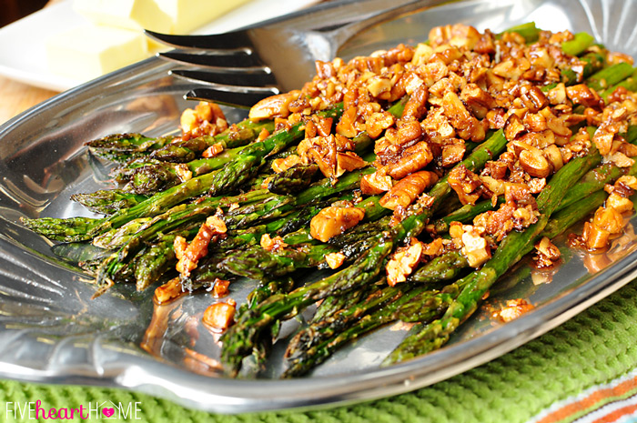

Southern cuisine and drink recipes for the the chef of the house. New recipes and reviews added monthly.
Why I Do What I Do
About
Picture this, Spring days have come and gone. No longer do cool breezes blow though the backyard while you tend to the garden. Yes, the time of year has come in the South when a cool rain shower leaves you in a sticky, sweaty sauna for the rest of the day. The heat and humidity stick to your skin like spiderwebs. Just when it seems there is no relief for the miserable heat you come across an intriguing recipe for Lynchburg Lemonade. A drink that you know will bring down the tempurature, but it has a slight twist that you have never seen before. After you gather up ingredients, and prepare your drink, you find a spot under the shade tree, and relax while your drink allows you to find salvation from the "dog days of summer". This website is the source of your relief for those gruesome summer days, as well as every other day of the year.
I have composed this website to bring to you the best recipes for Southern cuisine and drinks because I know how important food and alcohol are to the Southern way of life. Every month, I provide you with two new recipes; one classic cuisine recipe, and a monthly recipe for a seasonal mixed drink. Each recipe has been handed down through generations. Indeed, only time has perfected the combinations of ingredients and flavors, and I have brought them right to you for your personal enjoyment.
Roasted Asparagus with Brown Butter Pecans
Hungry
As warm weather and Spring flowers approach, so does the promise of fresh garden vegatables. One of the most iconic spring vegetables is commonly found along fence rows that run along side those old gravel roads. I'm talking about Asparagus, or course.
Asparagus has been around for as long as people have been able to ceate recipes. Nobody really knows the exact origin, but many people throughout history have considered this wild grass a delecacy fit for royalty.
Our recipe for roasted aspargus with brown butter pecans is provided courtesy of Samantha at Five Heart Home. As a southern cuisine website, I felt it was necessary to incorporate pecans in the recipe somehow, and nothing can top a brown butter pecan sauce to compliment any meal.

Roasted Asparagus with Brown Butter Pecans
2 pounds fresh asparagus Olive oil Salt&freshly ground black pepper 6 tablespoons butter 1/2 cup chopped pecans
Preheat oven to 400°F. Prepare asparagus by washing it and snapping off the tough ends of the stems.
Place asparagus in a large bowl or plastic baggie (I use a long, rectangular shaped plastic container that fits the shape of the asparagus bunch). Pour in a couple tablespoons of oil and season with salt and pepper. Mix until asparagus are evenly coated. Spread asparagus, in a single layer, onto a large, rimmed sheet pan.
Roast asparagus for 10 to 15 minutes (depending on desired doneness and how thick your spears are), or until spears are just tender and beginning to brown. Taste and season with salt, if desired.
While asparagus is roasting, make brown butter pecans. In a medium saucepan set over low heat, melt butter and stir in pecans. Cook, stirring occasionally, until butter browns and pecans are toasted, approximately 5 to 10 minutes. During the process, the butter will foam and then the foam will die back down. Watch closely so that the butter turns brown but doesn't burn.
Transfer asparagus to a serving platter, pour brown butter pecans over the top, and serve hot.
Mint Julep
Thirst Quenchers
One of the most well known alcohols of the South is, obviously, bourbon. The month of April has been deemed, "Mint Julep Month," to commemorate the most celebrated liquor of the South, and Kentucky's claim to fame.
The history of the Mint Julep can be traced back to a time long ago. It first gained real exposure in the 1800's. In areas surrounding Kentucky, Mint Juleps were consumed in the morning. They not only served as a light and refreshing beverage to begin the day, but the mint leaves were also chewed to improve bad breath. In 1850, Senator Henry Clay introduced the drink to Washington, D.C., and it immediately gained popularity in the White House. In the year, 1983, The Mint Julep became the official drink of the Kentucky Derby.
Today's recipe, the " Rough Rider's Mint Julep," comes from Town&Country's, Mark Will-Weber. This recipe offers a classic Mint Julep recipe with a personal touch from the greatest Rough Rider of all, Teddy Roosevelt.
Rough Rider's Mint Julep
10 to 12 Mint leaves Water 1 Sugar cube 2 to 3 oz. Rye whiskey .25 oz. Brandy Crushed ice
10 to 12 fresh mint leaves "muddled" (until it resembles paste) with a splash of water and a sugar cube
Mix Rye whiskey and brandy in mixer cup
Fill a bar glass with the muddled mint, then fill the glass generously with finely crushed ice